Web design & JavaScript
Nefertari Travel
The real site, live. Hover over the window to scroll through the page, click to open it.
For my final JavaScript assignment I had to build an interactive website around one theme: holidays. I chose Egypt and invented a travel agency to go with it, Nefertari Travel, named after Queen Nefertari, the great royal wife of Ramses II.
I designed the pages in Figma, drew the logo in Illustrator and then wrote the whole site myself in HTML, CSS and JavaScript, without templates or frameworks.
School assignment. Nefertari Travel is a made-up travel agency: the prices, reviews and contact details are fictional. All photos on the site come from Pexels and are free to use.
Visit the websiteHistory, sun and adventure
Egypt is three holidays in one: the pyramids and temples, the beaches of the Red Sea and the silence of the desert. The home page tells that story in the same order, from the past to the sea to a camel ride at sunset, so you want to go before you even reach the prices.
Gold, cream and royal blue
The colours come straight from my moodboard: the warm gold of the sand, a soft cream like papyrus and a deep blue taken from the lapis lazuli of the pharaohs. The titles are set in a classic, wide serif with lots of air, the text in a calm sans serif.
Written line by line
Every page, every grid and every animation is my own code. I kept the JavaScript small and readable: a handful of functions that each do one thing, like letting the hero appear, fading photos in while you scroll or swapping the photos of a destination.
Three pages
From dreaming to booking
Home makes you want to go, Destinations helps you choose and Book now lets you plan the trip. The same header, buttons and footer return on every page, so it always feels like one journey.
Destinations
Five places you have to see, city by city. Text and photos switch sides on every row, and the photos of each place change by themselves.
Book now
A short booking form with your destination and travel period, followed by the three travel packages, from a city trip to Cairo to a full tour of Egypt.
Five destinations
Places you have to see
Every destination got four photos and its own short story. On the site the photos fade into each other one by one, just like here. Click a photo to see it bigger.
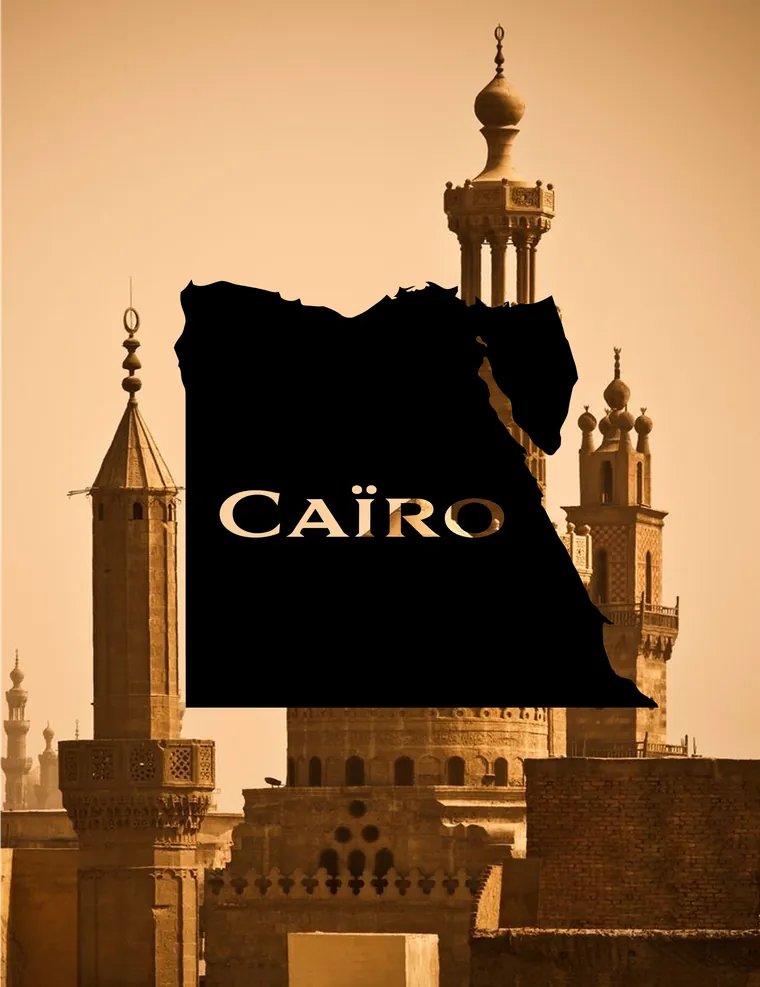
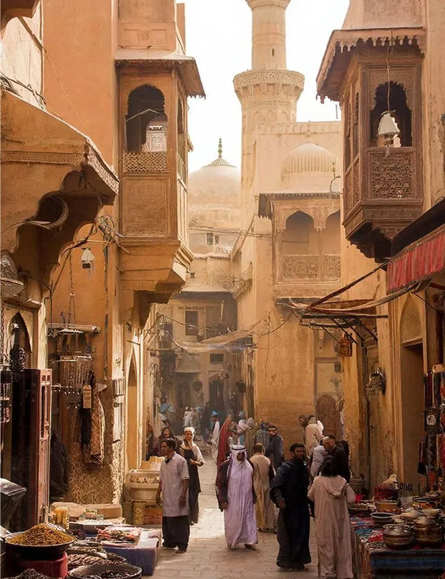
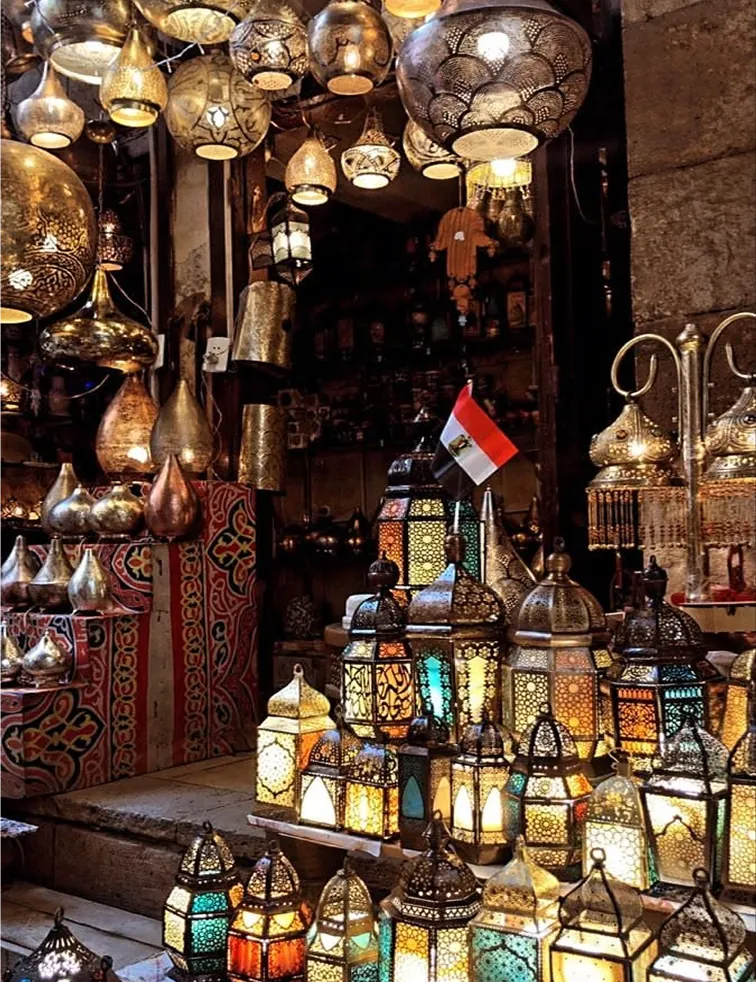
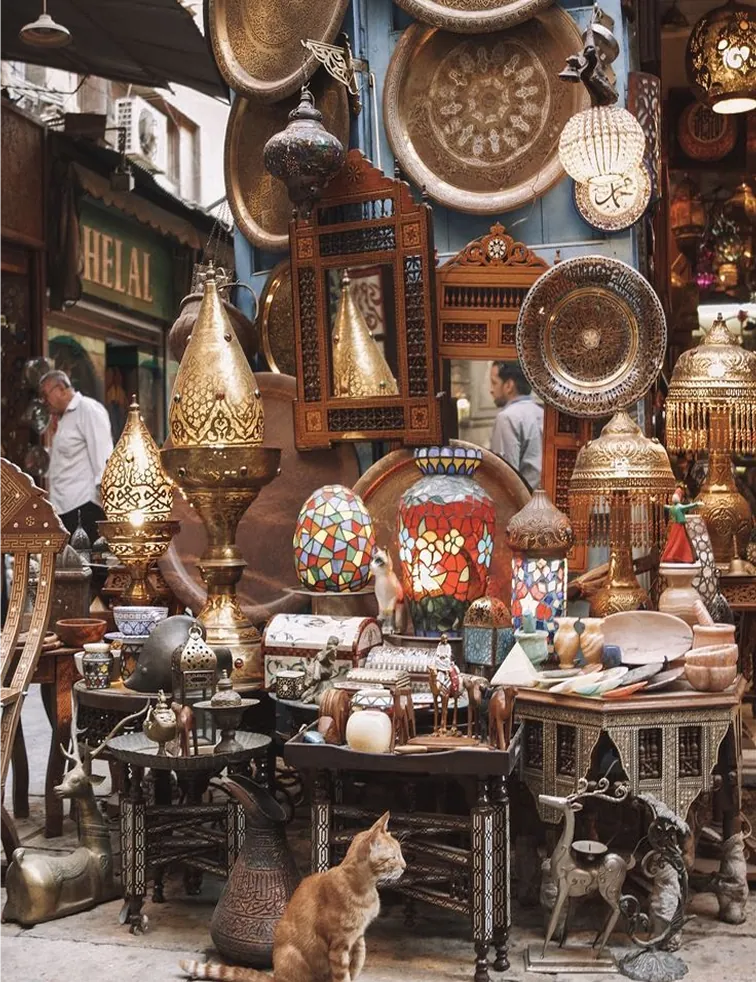
Cairo
The bustling capital
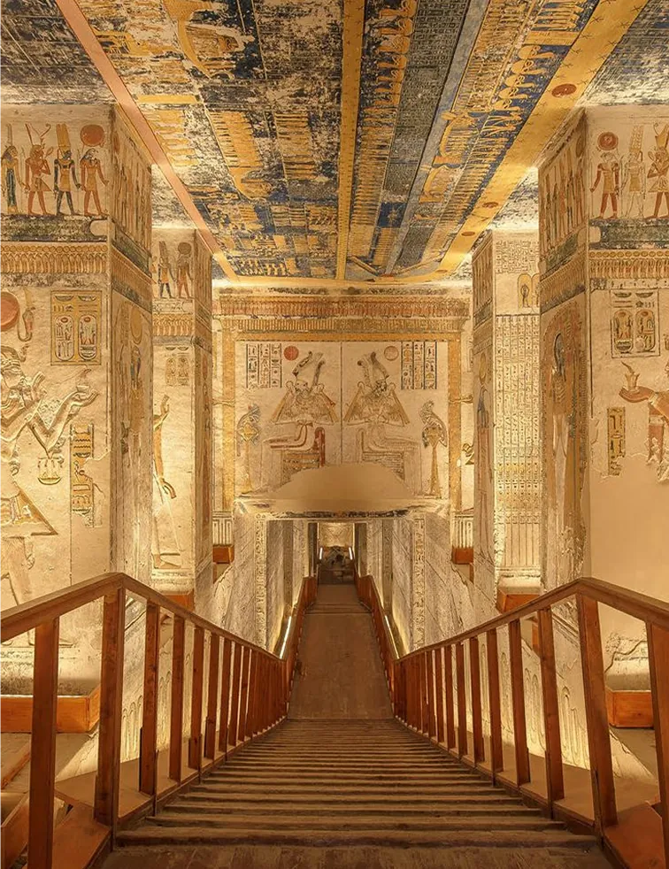


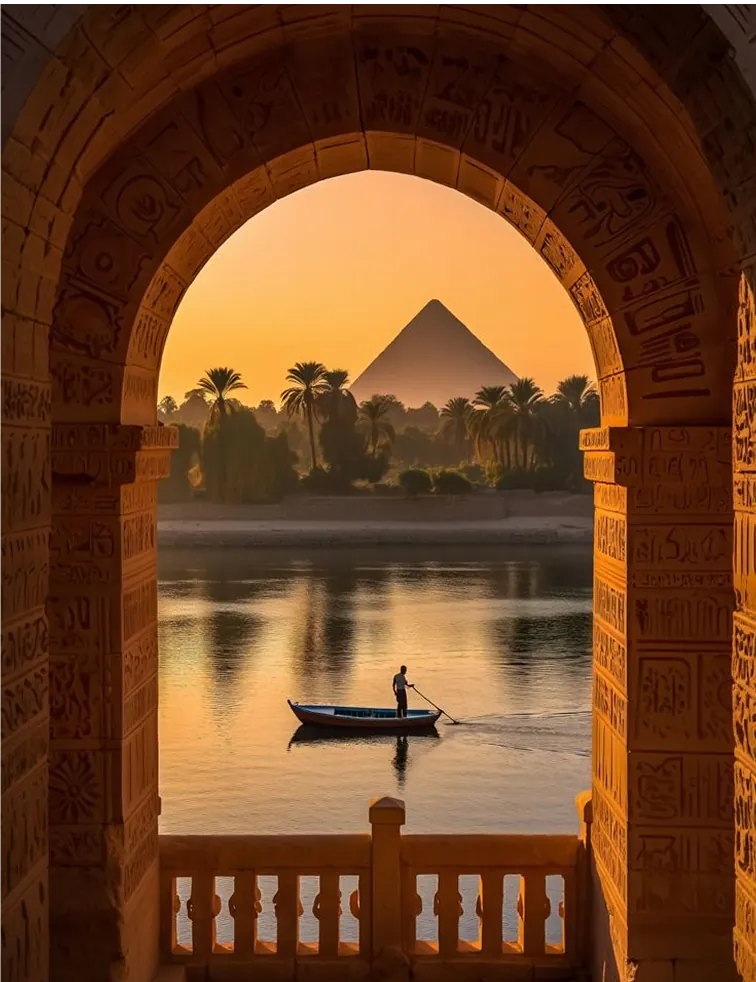
Luxor
The world's largest open-air museum

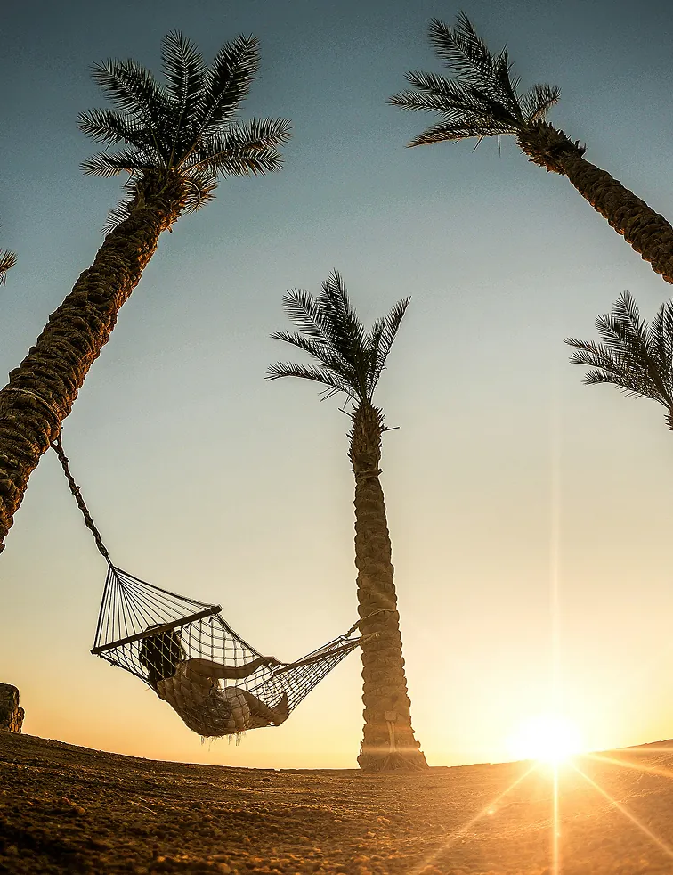


Hurghada
Sun, sea and coral reefs
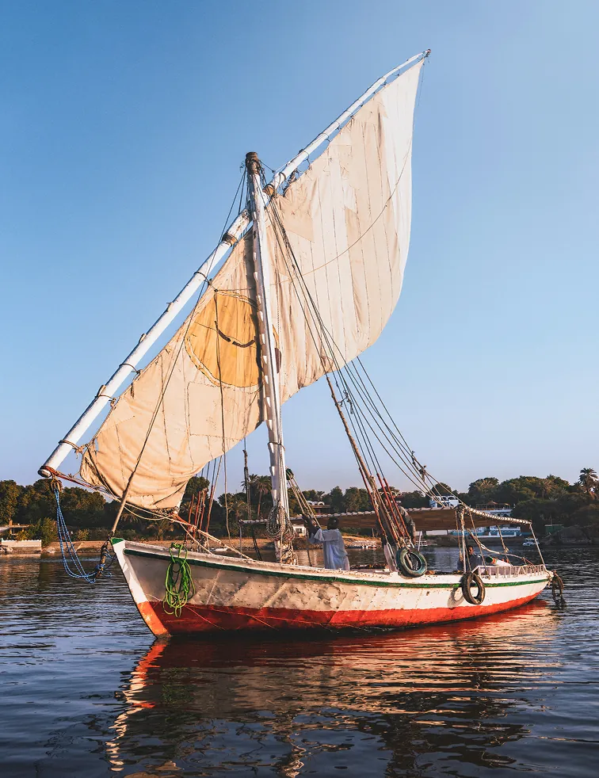
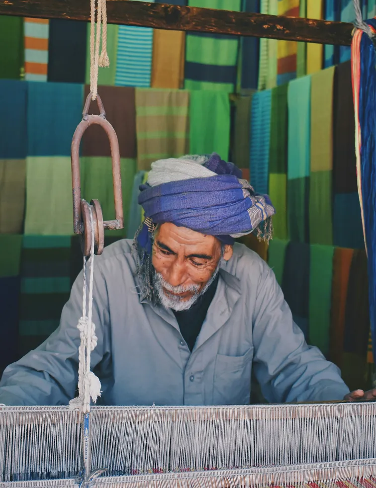

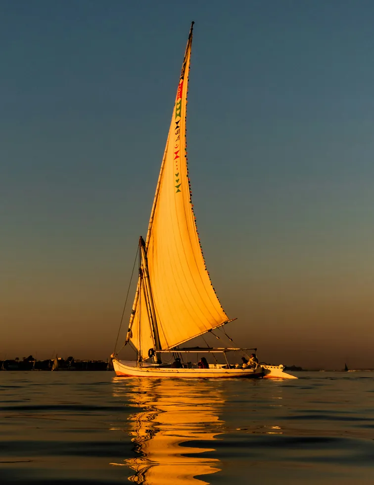
Aswan
Calm at the edge of the desert

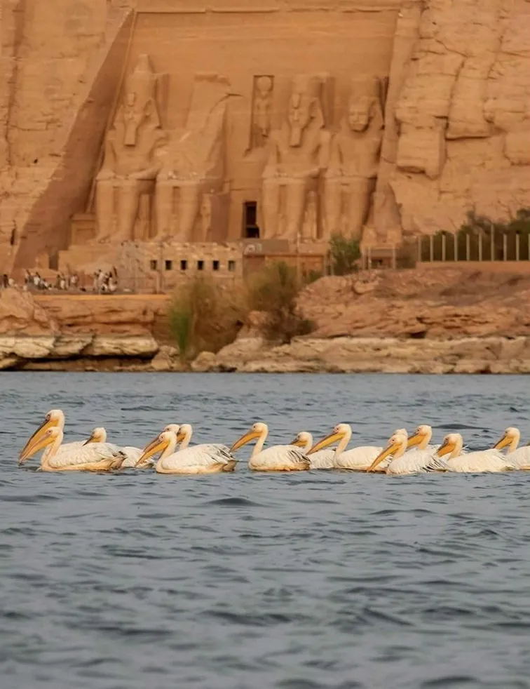
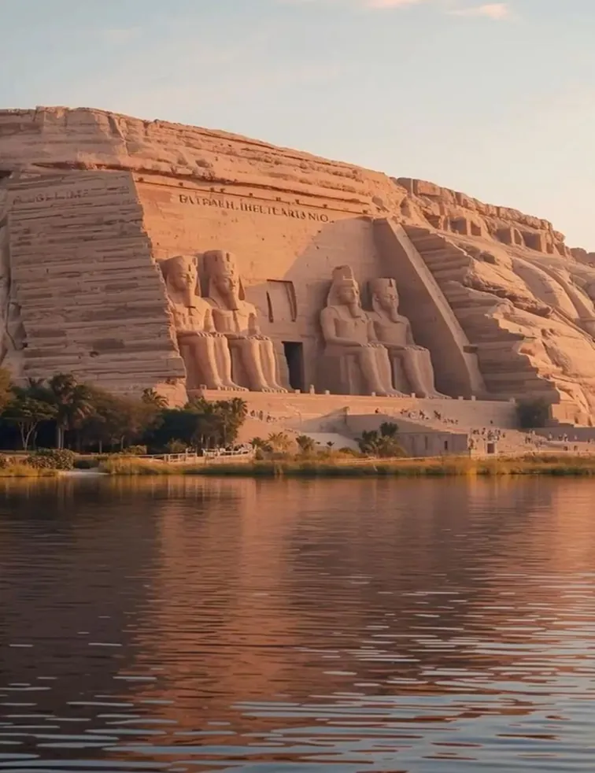

Nile cruise
Egypt seen from the water
JavaScript
Four small interactions
The assignment was about JavaScript, so I gave the site movement that supports the feeling of travelling without getting in the way. Each interaction is its own small function in one file.
-
01
The hero rises
When a page opens, the desert appears first. A moment later the title rises into view, followed by the two cards, one after the other.
setTimeout(() => heroTitle.classList.remove('js-hidden'), 300); -
02
Fading in while you scroll
Text and photos fade in as soon as they enter the screen, and fade out again when they leave it, whether you scroll down or back up.
entry.isIntersecting ? add('is-visible') : remove('is-visible') -
03
Photos that wipe open
Under "Sun & relaxation" and "Adventure" the photos open from left to right. How far they are open depends exactly on how far you have scrolled.
img.style.clipPath = `inset(0 ${100 - reveal}% 0 0)`; -
04
A slideshow per destination
Every five seconds the next photo of a destination fades in. When the last one is reached, it starts again at the first.
currentIndex = (currentIndex + 1) % items.length;
Logo & colours
A queen in a few shapes
The logo is an Egyptian queen, reduced to a handful of sharp shapes in blue and gold. I first tried it out in red and black, then chose the colours of the moodboard. The same shape comes back as a thin gold line drawing over the desert in the hero.
- Royal blue#0D3FDB
- Lapis#0057FF
- Desert gold#E2B560
- Papyrus#F9E2B3
- Night#14181F
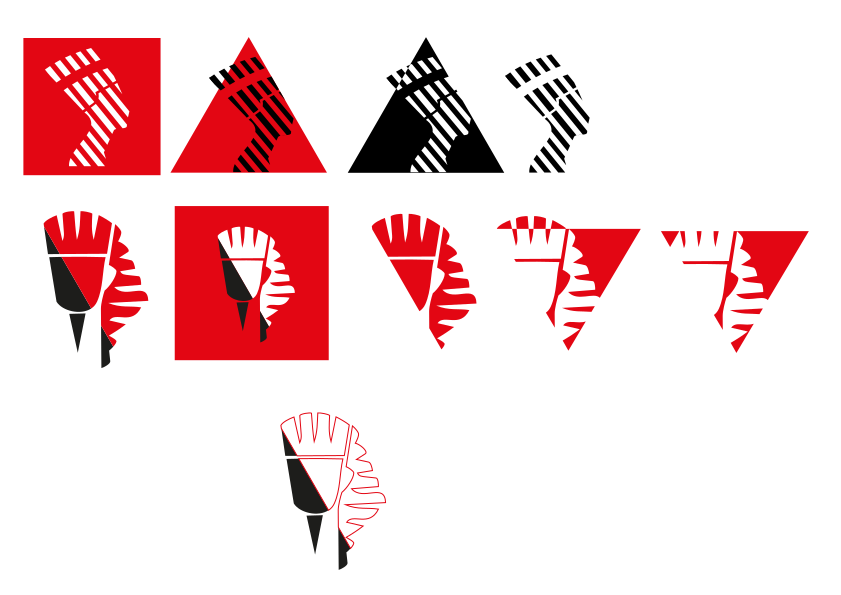
Your journey to the land
of the pharaohs starts here.
Photos: Pexels, free to use under the Pexels licence. The old engravings of the Sphinx and the Colossi of Memnon are 19th-century prints in the public domain. Best viewed on a computer.